About me
Hello, my name is Ian Channer, and I have been programming for eight years. I started programming with the intent to create and bring my ideas to life. I am primarily self-taught, but I have taken classes and attended camps whenever possible. My projects include games, apps, and backend architectures. I have experience working alone and in groups on full-stack projects. At the moment, I am focused more on the web and back-end development field.
I have experience with...

 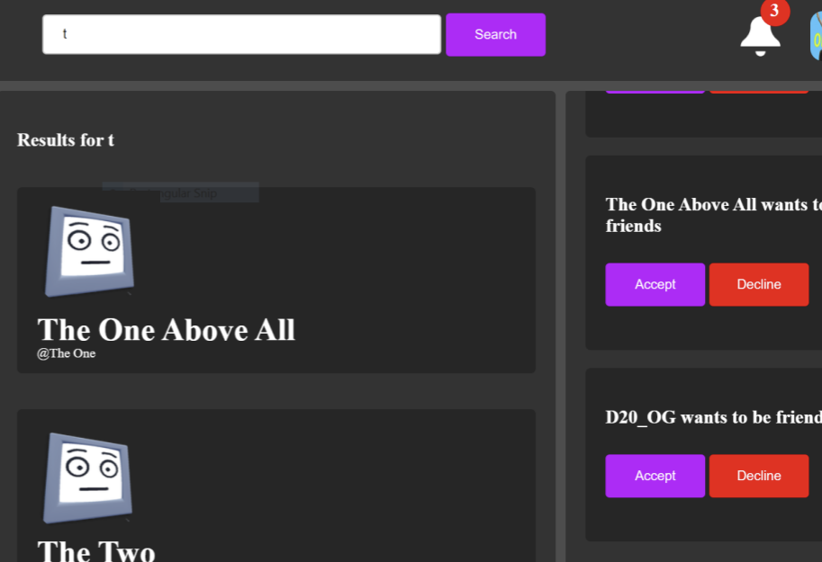
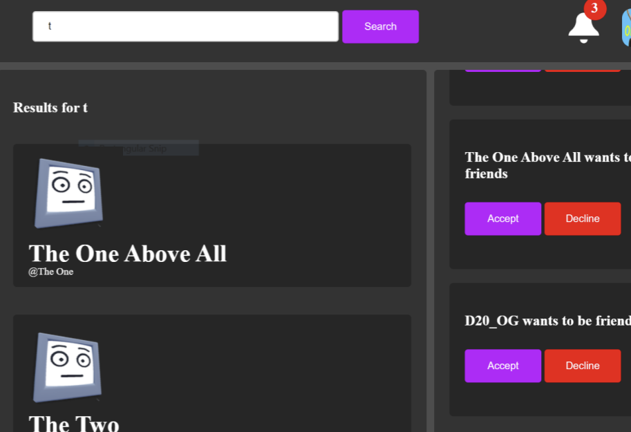
This was was one of my very first serious projects. At the time, I had mostly been making simple games, but this time around, I wanted to create a social site. The website incorporated login/registration, friending, notifications, account editing, and a search function. I used HTML, CSS, and Jquery for the front-end and PHP/Javascript for the backend. Despite the shabby code, along the way, this project was a great introduction to the web development field for me.
 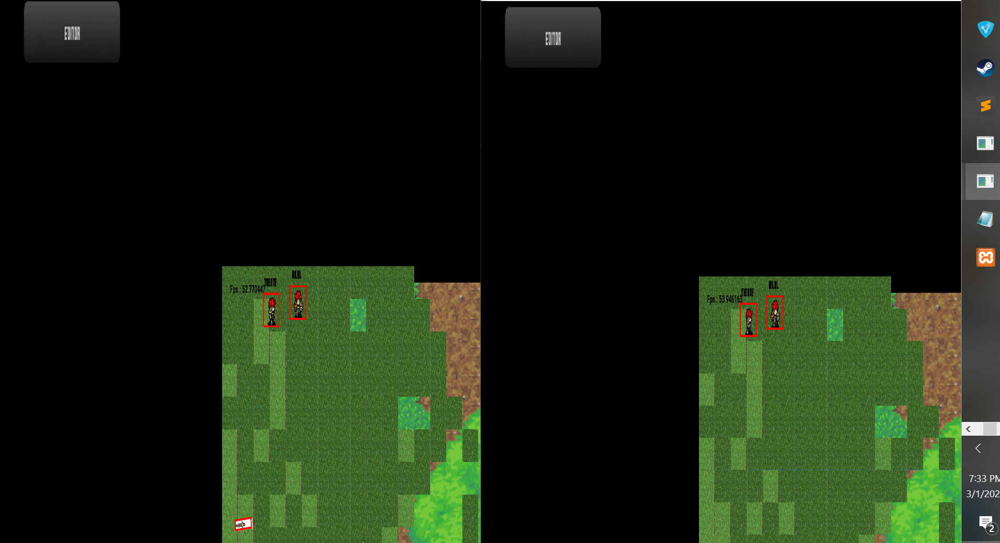
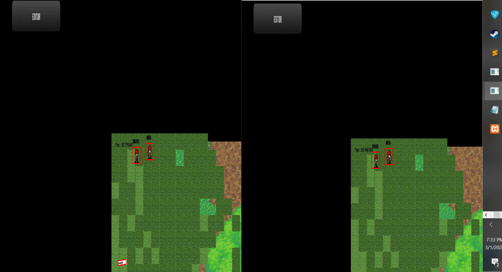
My RPG project is a full-stack online game made with Open-Gl in C++. The game world incorporates simple 2D physics, interactable objects, randomly spawning enemies, and a level editor. The back-end portion is the project's highlight, the clients are synced using UDP socket protocol. Syncing the game between clients in a smooth manner was hard to accomplish, so I ended up making good use of linear interpolation to smooth out choppy data. Additionally, every player is linked to an account so their game stats can be saved to a SQL database. Sadly, a majority of the project went missing due to my computer breaking.

 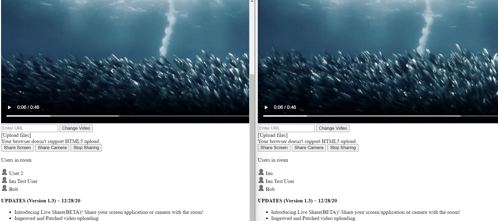
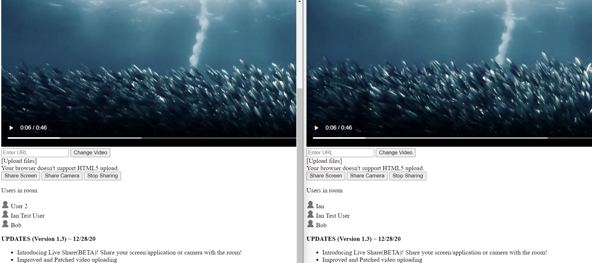
Mezia is a video syncing website I made for my friends and I to watch videos in perfect synchronicity. Users can join a room given the unique room id. The videos are synched using web sockets by sending the video's timestamp in each packet. The original code for the website was extremely messy, so I decided to rewrite the program in hopes of growing the site. However, I decided against it, considering the expensive sever costs of hosting videos and potential copyright issues.


This project provides a secure method of handling user authentication and account actions using Node.js and Mongo-DB. I used the JSON-Web-Token library to generate authentication tokens and then sent them back to the client. Most of the time, web tokens have an expiration date to ensure security. However, that can become a nuisance to the users, given they’ll have to keep signing in. This authentication model aimed to solve that by persisting the user's authentication using a separate refresh token to continuously generate new tokens. The refresh token can not be used without an existing authentication token, making it useless to hackers. Refresh tokens are kept on a database for however long the user is logged in, and then removed on logout.

 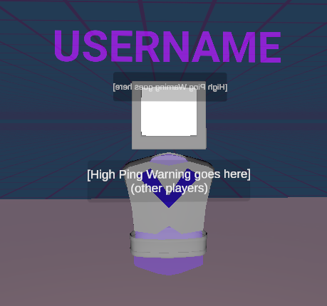
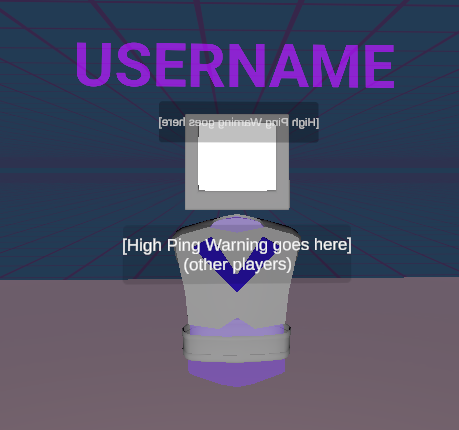
The Great Outdoors is an online virtual reality game made in Unity. The code base for this project extends a bit outside the Git repository below, given that it was a group project with two other people (Logan Simons and Seth Richards). This project is a proof of concept for a application where users can interact and talk in virtual reality. The game is set up to support all Steam VR devices. The game incorporated surround audio, smooth locomotion, VR physics, and an array of interactable types, all synched between clients.
 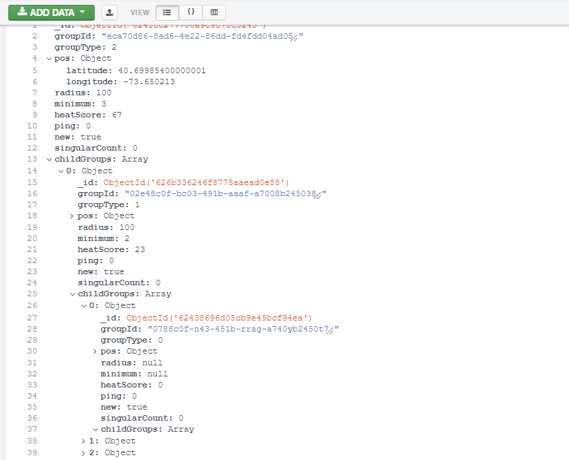
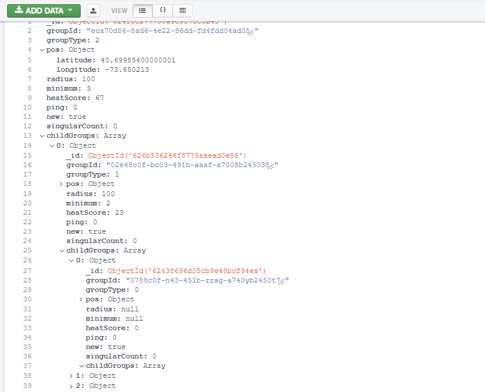
Cyclons' backend program aggregates geospatial points into sets. Almost like a heatmap, but much more segregated. Four layers of distinct groups exist single (a single point), small (cluster of three points), medium (cluster of three smalls), and large (cluster of two mediums). If three or more groups of the same layer are near each other, they create a larger group. Each existing group must recursively search within itself to ensure it meets the conditions to exist. The clustering is similar to how a DBSCAN algorithm would work. I planned to scale this project into a social network for cyclists but wasn’t happy with the project's direction.
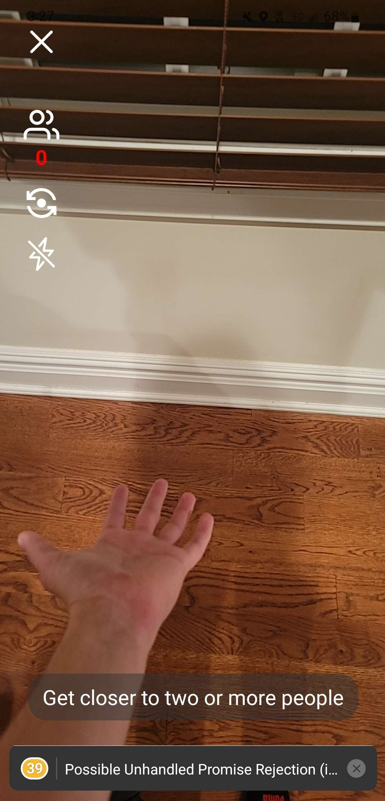
Cheese will be a photo-sharing app that prompts users to be within 6 feet of two people to create a closed polygon shape on a map where each point correlates to an image/gif. Not to mention, this project repurposes some of the code from Cyclon.